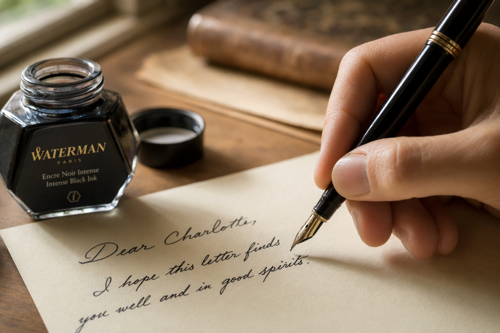

YOURBRAND
YOURBRAND
Some Words Still Deserve A Stamp
A slow ritual worth bringing back into your week
YOURBRAND

Choose Your Paper & Pen
The Tools That Set The Tone
Pick a paper with real weight and a pen that glides without effort. The texture you choose says something before your first word does.
01 · 03
YOURBRAND
Open With Something Real
Skip The Small Talk Opener
Skip the weather and get straight to a memory, a question, or the moment that made you think of them. Specific beats generic, always.
02 · 03
YOURBRAND
Close With A Small Ritual
Fold, Stamp, Send With Care
Fold the page with care, pick a stamp that feels right, and walk it to the mailbox yourself. The short walk is part of the gift.
03 · 03
YOURBRAND
Put Pen To Paper Today
Follow along for more slow correspondence rituals